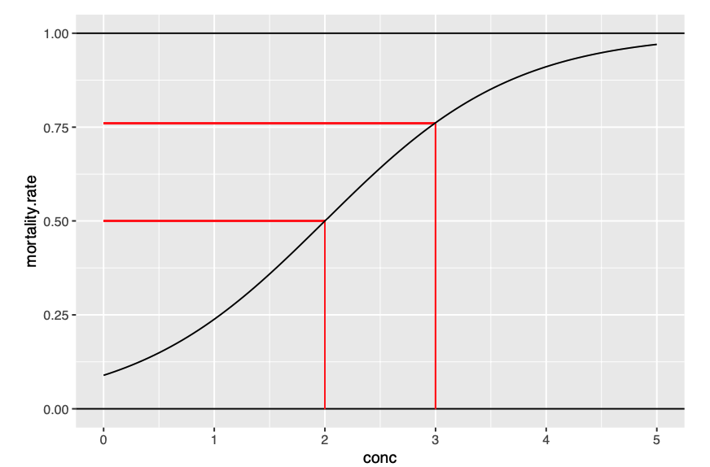

GLM
Generalized Linear Models
Depending on the outcome variable, we can use different types of models. For example, if the outcome variable is binary, we can use a logistic regression model. If the outcome variable is continuous, we can use a linear regression model. If the outcome variable is count data, we can use a Poisson regression model.
Binary and binomial dependet variable
Binary and binomial data naturally fall within the range of 0 to 1 (and are mathematically the same: binary = total number of trials is 1). Using a linear regression model would there predict values outside of this range. This would be a extrapolation which would make sense. Furthermore, in the case of logistic regression using a identity link function (i.e. linear regression) the predicted values would be heavily be influences by extreme values. Therefore, we adapt the linear regression based on attributes of the dependent variables. Additionally, we can’t assume normal distribution of errors for inference. Therefore, with this kind of data we assume other distributions as binomial distribution.
Not all proportions are binomial. Binomial data always refer to a ration among two integers. Proportions between conitous variables are not binomial data. Binomial data is something that was tested several times and has only two possible outcomes. The number of trials is essential to define the precision of each observation. So we need independent trials with outcome 0 or 1.
Proportions between continous variables can be analysed with LM after transformation (i.e. arc-sin-square-root)
Binomial distribution is a discrete probability distribution that describes the number of successes in a fixed number of independent Bernoulli trials, each with the same probability of success. Coin tosses.
For binary and binomial data we use a logit link function that bounds the y between 0 and 1. The logit link function is defined as:
\[logit(y) = log(\frac{y}{1-y})\]
We therefore model the logit of y. The model transforms probabilities into log-odds so we can use linear modeling
\[ logit(\text{probability of success: p}) = log(\frac{p}{1-p}) = \beta_0 + x_1*\beta_1...\]
\[exp(log(\frac{p}{1-p})) = \frac{p}{1-p} = exp(\beta_0) + exp(\beta_1)\]
- Logit transforms probabilities into something you can model linearly.
- Exponentiation converts model coefficients back to a scale you can interpret (odds ratios).
- If you want to interpret effects on probability, use the divide by 4 rule or predict actual probabilities.
For binomial data we use cbind(), for logistic regression we don’t use cbind().
Multinomial dependent variable
Is a categorical variable with more than two levels. For example, the outcome variable could be a categorical variable with three levels: “low”, “medium”, and “high”. In this case, we can use a multinomial logistic regression model. The multinomial logistic regression model is an extension of the binary logistic regression model that allows for more than two categories. The multinomial logistic regression model uses a softmax function to model the probabilities of each category. The softmax function converts a vector of raw scores (logits) into a probability distribution, ensuring the sum of probabilities for all classes equals one.
Set cutoff
For logistic regression we set a cutoff the classify the outcome variable. The cutoff is the probability threshold above which we classify the outcome variable as 1 (success) and below which we classify the outcome variable as 0 (failure). The default cutoff is 0.5, but we can set a different cutoff based on the specific problem and the cost of false positives and false negatives.
Now let’s compare fitted vs. observed (confusion matrix)
compare <- data.frame(obs = df$obs,
fitted = classification)
# absolute
table(obs = compare$obs,
fitted = compare$fitted)
# percentage
table(obs = compare$obs,
fitted = compare$fitted) %>%
prop.table() %>%
round(digits = 2)Naturally we would continue analysing different cutoff points with ROC and AUC.
Poisson regression
This model handels count data which is often encountered in real life situations where y data doens’t follow a normal distribution. Using a Linear model to model count data can lead to following problems:
- The predicted values can be negative, which is not possible for count data.
- The predicted values are not integers, which is also not possible for count data.
- The variance of count data naturally increases with the expected value (i.e. mean)
Mean-variance dependence: the variance of the data increases with the mean. This is not the case for normal distribution, where the variance is constant. Therefore heteroscedasticity is a problem when using linear models to model count data.
Idea
Change the linear model formular so that we only predict positive values:
\[\hat y = exp(\hat \beta_0 + \hat \beta_1*x_1) \] this is equal to:
\[log(\hat y) = \hat \beta_0 + \hat \beta_1*x_1\]
We see that we can use natural logarithm as a link function. Next, we want y to be integer values and that the variance is dependent on the mean. Therefore, we use a Poisson distribution. The Poisson distribution is a discrete probability distribution that describes the number of events occurring in a fixed interval of time or space, given a known average rate of occurrence. The Poisson distribution is characterized by its mean (λ), which is also equal to its variance.
glm.poisson <- glm("outcome_variable" ~ "predictor1" + "predictor2",
data = "data",
family = "poisson")Overdispersion
Dispersion parameter for poisson family taken to be 1 refers to the assumption that the variance increases linearly with the mean. In real life situations this is not the case. The variance is often larger than the mean. This is called overdispersion. In this case we can use a quasipoisson model.
Compare Residual deviance with the degrees of freedom. If the residual deviance is larger than the degrees of freedom, then we have overdispersion.
glm.poisson <- glm("outcome_variable" ~ "predictor1" + "predictor2",
data = "data",
family = "quasipoisson")This imokies that the variance increases faster than linearly. The estimated coefficents are identifical but the standard error change and as a consequences the p-values change. ## GAM Extension of Linear Model to non-linearity
Interpretation of Coefficients
Poisson Model
── Attaching core tidyverse packages ──────────────────────── tidyverse 2.0.0 ──
✔ dplyr 1.1.4 ✔ readr 2.1.5
✔ forcats 1.0.0 ✔ stringr 1.5.1
✔ ggplot2 3.5.1 ✔ tibble 3.2.1
✔ lubridate 1.9.4 ✔ tidyr 1.3.1
✔ purrr 1.0.2
── Conflicts ────────────────────────────────────────── tidyverse_conflicts() ──
✖ dplyr::filter() masks stats::filter()
✖ dplyr::lag() masks stats::lag()
ℹ Use the conflicted package (<http://conflicted.r-lib.org/>) to force all conflicts to become errors
Call:
glm(formula = complaints ~ ., family = "poisson", data = esdcomp)
Coefficients:
Estimate Std. Error z value Pr(>|z|)
(Intercept) -0.0803448 1.1542122 -0.070 0.94450
visits 0.0009499 0.0003386 2.806 0.00502 **
residencyY -0.2319740 0.2029388 -1.143 0.25301
genderM 0.1122391 0.2235043 0.502 0.61554
revenue -0.0033827 0.0041553 -0.814 0.41560
hours -0.0001569 0.0006634 -0.237 0.81298
---
Signif. codes: 0 '***' 0.001 '**' 0.01 '*' 0.05 '.' 0.1 ' ' 1
(Dispersion parameter for poisson family taken to be 1)
Null deviance: 89.447 on 43 degrees of freedom
Residual deviance: 49.995 on 38 degrees of freedom
AIC: 184.77
Number of Fisher Scoring iterations: 5Since we are modelling log(y) we have to exponentiate (inverse functions) the coefficients to get the multiplicative effect of a one unit increase in the predictor variable on the expected value of y.
Factor
Males get on average 12% more complaints than women doctors
Continous
For a given doctor, increasing its number of visits by one,would results in about 0.1% more complaints.
Increase in visist by one is not really interesting:
For a given doctor, if you were to increase its number of visits by 50, then we expect this doctor to get about 4.86% more complaints
Binomial Model
glm.insects <- glm(cbind(dead, alive)~ conc,
family = "binomial",
data = bliss)
summary(glm.insects)
Call:
glm(formula = cbind(dead, alive) ~ conc, family = "binomial",
data = bliss)
Coefficients:
Estimate Std. Error z value Pr(>|z|)
(Intercept) -2.3238 0.4179 -5.561 2.69e-08 ***
conc 1.1619 0.1814 6.405 1.51e-10 ***
---
Signif. codes: 0 '***' 0.001 '**' 0.01 '*' 0.05 '.' 0.1 ' ' 1
(Dispersion parameter for binomial family taken to be 1)
Null deviance: 64.76327 on 4 degrees of freedom
Residual deviance: 0.37875 on 3 degrees of freedom
AIC: 20.854
Number of Fisher Scoring iterations: 4Continous
By increasing the concentration of the insecticide by one unit, we will obtain an increased risk in the odds of about 3 times. Where odds are the ratio of the probability of success (p) to the probability of failure (1-p). In this case success is the death of the insects.

With one unit increase in concentration, the odds of death increase by a factor of 3. This means that the odds of death are 3 times higher for each unit increase in concentration:
\[1:\frac{1}{3} \rightarrow 1:1 \rightarrow 1:3\]
Factors
Divide by 4
Quick interpretation of odds as upper bound increase in probability of y = 1.
Overdispersion
You can add quasibinomial to the family argument. This will give you a dispersion parameter that is greater than 1. But only works for binomial data and not binary.